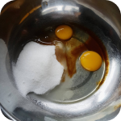

บราวนี่ สูตรนี้ขอบอกว่าเข้มข้นถึงใจ
STEP 1 : ขั้นตอนแรกเตรียมส่วนผสมให้พร้อมแล้ว มาเริ่มลงมือทำกันเลยดีกว่าอย่ารอช้าาา
STEP 2: วอร์มเตาอบที่ 180 องศาเซลเซียส ใช้ถาด 8x8 ทาเนยและปูกระดาษไขเตรียมรอไว้
STEP 3 : ละลายดาร์กช็อกโกแลต เนยเค็ม และผงโกโก้ จนขึ้นเป็นเงาตามในรูป พักไว้ให้พออุ่นไม่ต้องถึงกับเย็น
เคล็ดลับ: ใครจะไม่มีเนยเค็มจะใช้เนยจืดก็ได้นะคะแต่ต้องใส่เกลือ 1/4 ช้อนชา
เคล็ดลับ: ใครจะไม่มีเนยเค็มจะใช้เนยจืดก็ได้นะคะแต่ต้องใส่เกลือ 1/4 ช้อนชา
STEP 4 : นำแป้งและผงฟูคนให้เข้ากัน แล้วพักไว้ (สูตรนี้ไม่ต้องร่อนแป้ง)

STEP 5 : ตีไข่ไก่ น้ำตาลทราย เกลือ และกลิ่นวนิลา
STEP 6 : จนกว่าน้ำตาลจะละลายและสีอ่อนลงจนเป็นเหมือนในรูป
STEP 7 : เทดาร์กช็อคโกแลตที่ละลายแล้วลงในส่วนผสมที่ 4 คนให้เข้ากันโดยใช้พายหรือตระก้อมือก็ได้
STEP 8 : ใส่แป้งลงไปและคนให้เข้ากันจนแป้งไม่เป็นเม็ด
STEP 9 : เมื่อคนเข้ากันดีก็จะได้แบบนี้
STEP 10 : เทส่วนผสมลงในถาด กระแทกพิมพ์ก่อนอบสักนิด อบไฟบนล่าง 180 องศาเซลเซียส ประมาณ 18-20 นาที แล้วแต่เตาอบของแต่ละบ้าน
เคล็ดลับ: **หากใครอยากใส่ถั่วต่างๆ โอริโอ้ หรือช็อกโกแลตชิพ ให้ใส่ในขั้นตอนนี้ได้เลยนะคะ**
เคล็ดลับ: **หากใครอยากใส่ถั่วต่างๆ โอริโอ้ หรือช็อกโกแลตชิพ ให้ใส่ในขั้นตอนนี้ได้เลยนะคะ**
STEP 11 : อบเสร็ออกมาหน้าตาจะประมาณนี้ ถาดนี้ไม่ได้ใส่หน้าอะไรแค่ทานเปล่าๆก็อร่อยยยแล้ว
เคล็ดลับ: **ก่อนตัดแนะนำให้นำไปแช่เย็นก่อนนะคะจะทำให้ตัดง่ายขึ้น**
เคล็ดลับ: **ก่อนตัดแนะนำให้นำไปแช่เย็นก่อนนะคะจะทำให้ตัดง่ายขึ้น**
STEP 12 : ส่วนถาดนี้ทำให้ดูเป็นหน้าโอริโอ้ ใครอยากใส่ทั้งชิ้นก็ได้หรือจะหักตามภาพก็ได้เช่นกัน
STEP 13 : ตัดพร้อมเสิร์ฟแล้ว :)